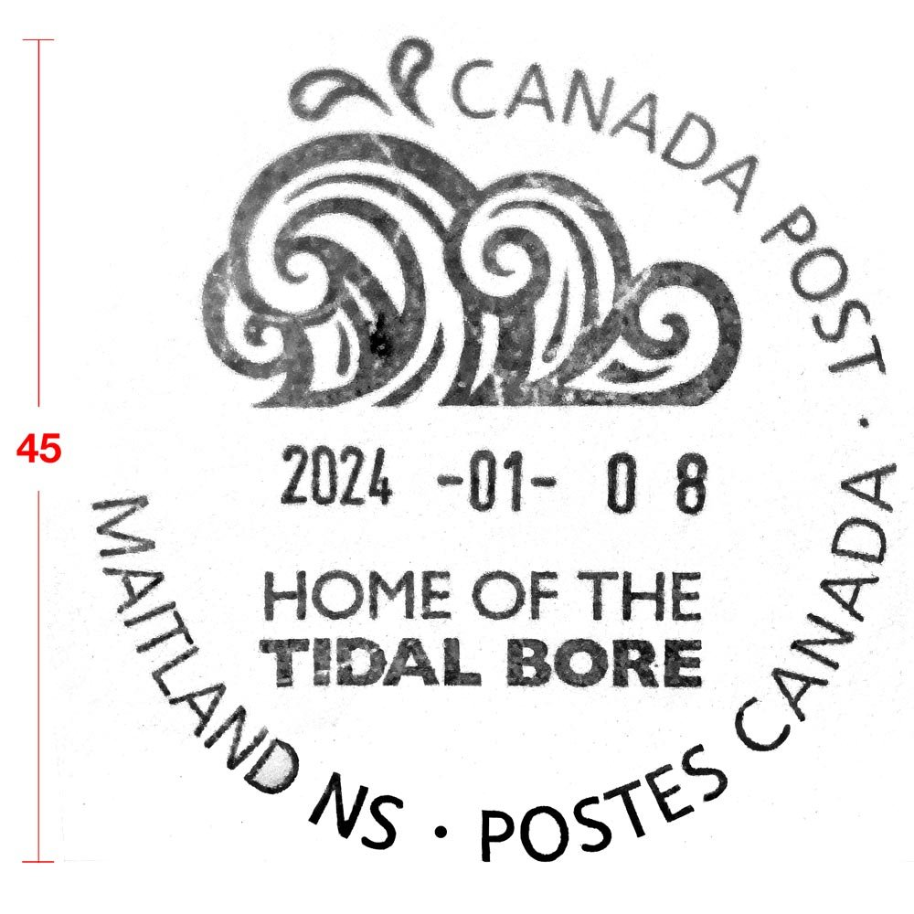

Maitland PO pictorial cancel
Home of the Tidal Bore
- Status
- Active
- Run dates
- 2021-01-01 to present
- Design
- "HOME OF THE TIDAL BORE"; tidal bore
- Ink colour
- Black
- Designer
- Unknown
- Post office
- Maitland PO
Lunenburg, NS B0J 2C0 - Subjects
- nature, water, tide, tidal bore
Collect it by mail. Send your stamped covers, with a stamped return envelope, to the post office address above. How to collect pictorial cancels by mail · en français
 Noel POPink
Noel POPink Noel POGreen
Noel POGreen Shubenacadie POThe Milk Can Capital of Canada / La capitale canadienne du bidon de lait
Shubenacadie POThe Milk Can Capital of Canada / La capitale canadienne du bidon de lait Wenthworth POSki Wenthworth
Wenthworth POSki Wenthworth Middle Musquodoboit POSINCE 1884 / HOME OF HALIFAX COUNTY EXHIBITION
Middle Musquodoboit POSINCE 1884 / HOME OF HALIFAX COUNTY EXHIBITION